2 Posición y Orientación de Cuerpos Rígidos
\[ \newcommand{\vect}[1]{\boldsymbol{#1}} \newcommand{\x}{\vect{x}} \newcommand{\y}{\vect{y}} \newcommand{\z}{\vect{z}} \newcommand{\e}{\vect{e}} \newcommand{\f}{\vect{f}} \newcommand{\g}{\vect{g}} \newcommand{\G}{\vect{G}} \newcommand{\h}{\vect{h}} \newcommand{\J}{\vect{J}} \newcommand{\n}{\vect{n}} \newcommand{\p}{\vect{p}} \newcommand{\q}{\vect{q}} \newcommand{\s}{\vect{s}} \newcommand{\w}{\vect{w}} \newcommand{\m}{\vect{m}} \renewcommand{\a}{\vect{a}} \renewcommand{\b}{\vect{b}} \renewcommand{\c}{\vect{c}} \renewcommand{\d}{\vect{d}} \renewcommand{\r}{\vect{r}} \renewcommand{\u}{\vect{u}} \renewcommand{\v}{\vect{v}} % Problems? \newcommand{\vv}{\vect{v}} \newcommand{\rr}{\vect{r}} \newcommand{\bv}{\vect{v}} \] \[ \newcommand{\vi}{\vect{i}} \newcommand{\vj}{\vect{j}} \newcommand{\vk}{\vect{k}} \] \[ \newcommand{\bomega}{\vect{\omega}} \newcommand{\bphi}{\vect{\phi}} \newcommand{\bepsilon}{\vect{\epsilon}} \newcommand{\btheta}{\vect{\theta}} \newcommand{\btau}{\vect{\tau}} \newcommand{\bmu}{\vect{\mu}} \newcommand{\bvarphi}{\vect{\varphi}} \newcommand{\bxi}{\vect{\xi}} \] \[ \newcommand{\zeros}{\vect{0}} \] \[ \newcommand{\dq}{\dot {\vect{q}}} \newcommand{\ddq}{\ddot {\vect{q}}} \newcommand{\dx}{\dot {\vect{x}}} \newcommand{\ddx}{\ddot {\vect{x}}} \] \[ \newcommand{\Ja}{{J_{_{\!A}}}} \]
\[ \newcommand{\half}{\frac{1}{2}} \newcommand{\quarter}{\frac{1}{4}} \]
\[ \newcommand{\bm}[1]{\begin{bmatrix}#1\end{bmatrix}} \newcommand{\mat}[1]{\boldsymbol{#1}} \newcommand{\Rot}{\mat{R}} \newcommand{\Tran}{\mat{T}} \newcommand{\tr}{\text{tr}} % For trace \]
\[ \newcommand{\R}{\mathbb{R}} \newcommand{\dt}{\Delta t} \] \[ \renewcommand{\frame}[1]{\{\mathcal{#1}\}} \newcommand{\framen}[1]{\{{#1}\}} \newcommand{\supFrame}[1]{~\!{^{\mathcal{^{_{#1}}\!}}}} \newcommand{\ssr}[2]{{{~\!}^{^{_{\mathcal{#1}}}\!\!}}{\Rot}_{_{\mathcal{#2}}}} \newcommand{\ssrnocal}[2]{{{~\!}^{^{_{#1}}\!\!}}{\Rot}_{_{#2}}} \newcommand{\ssomega}[2]{{^{#1}}{\bomega}_{#2}} \newcommand{\ssv}[3]{{^{^{_{#1}}\!}}{#2}_{_{\!#3}}} \newcommand{\sv}[2]{{^{^{_{#1}}\!}}{#2}} \newcommand{\ssdr}[2]{{^{^{_{#1}}\!\!}}{\dot \Rot}_{_{#2}}} \newcommand{\sst}[2]{{{~\!}^{^{_{\mathcal{#1}}}\!\!}}{\Tran}_{_{\mathcal{#2}}}} \newcommand{\sstnocal}[2]{{^{^{_{#1}}}}{\Tran}_{_{#2}}} \]
\[ \newcommand{\atan}{\text{atan}} \newcommand{\sen}{\text{sen}} \newcommand{\sgn}{\text{sgn}} \newcommand{\fpartial}[2]{\frac{\partial {#1}}{\partial {#2}}} \newcommand{\grad}{^{\circ}} \]
Uno de los aspectos fundamentales para lograr el movimiento adecuado de un robot es poder representar la posición y orientación de los principales elementos que lo conforman. Como se vio en el capítulo 1, el modelo típicamente utilizado de un robot abstrae todo el sistema como una serie de eslabones conectados mediante articulaciones, donde los eslabones se consideran cuerpos rígidos. La representación adecuada de estos eslabones permitirá generar trayectorias para partes importantes del robot, como el efector final de un manipulador, y permitirá definir algoritmos de control para que el robot alcance alguna configuración deseada. Esto es posible ya que el movimiento mismo se expresa en función de posiciones y orientaciones espaciales, e incluso el control de fuerza requiere del conocimiento de la posición y orientación del elemento rígido que aplica o donde se aplica alguna fuerza. Así, la manipulación robótica es posible gracias al conocimiento de posiciones y orientaciones tanto de las partes del robot, como de los objetos que son manipulados.
Pero no solo el movimiento de los robots manipuladores se basa en la representación espacial de cuerpos rígidos, ya que las partes importantes de los robots móviles, como el chasis, también son modeladas como cuerpos rígidos, siendo necesario conocer su posición y orientación con respecto a algún sistema de referencia. La diferencia principal es que para un robot manipulador el sistema de referencia asociado a su base es fijo, mientras que el sistema de referencia de la base de un robot móvil se mueve en su entorno, siendo necesario establecer un sistema fijo en algún lado de su área de trabajo. Por tanto, para poder describir dónde se encuentra un robot móvil, sea terrestre, aéreo, o submarino, es necesario poder representar su posición y orientación con respecto a un sistema fijo.
En este capítulo se brindará los conceptos básicos necesarios para poder representar tanto la posición como la orientación de un cuerpo rígido a través del uso de matrices de rotación y de matrices de transformación homogénea.
2.1 Introducción
Para saber dónde se encuentra un cuerpo rígido es necesario asociar un sistema de referencia a alguna parte del entorno y otro sistema de referencia al propio cuerpo rígido, con el fin de poder representar la posición y orientación de un sistema con respecto al otro. Cuando el cuerpo rígido experimenta algún movimiento, denominado transformación rígida, su sistema de referencia asociado se mueve de manera solidaria con él, siendo en este caso la posición y orientación funciones del tiempo, pero manteniéndose la esencia de su representación. Esta sección presenta una descripción más detallada de estos conceptos.
2.1.1 Sistema de Referencia
Un sistema de referencia, a veces denominado sistema de coordenadas o sistema coordenado de referencia o marco de referencia, es un conjunto de vectores que conforman una base en un espacio Euclideano. Usualmente se utiliza como base a vectores unitarios a lo largo de ejes coordenados perpendiculares entre sí y con un origen común, el cual suele ser representado como \(\vect o\). En el caso tridimensional se utiliza tres ejes coordenados perpendiculares entre sí, representados por tres vectores ortonormales típicamente denominados \(\hat\x\), \(\hat \y\) y \(\hat \z\), donde \(\hat .\) indica que se trata de vectores unitarios. Para el caso bidimensional se omite alguno de estos ejes, según sea conveniente, utilizando solamente dos vectores. Dado que un sistema de referencia siempre necesita de sus ejes, se dice que se encuentra completamente descrito si se tiene una completa representación de cada uno de ellos. Esto implica que, al describir los ejes, se describe por completo al sistema. En robótica se utiliza casi exclusivamente sistemas de referencia en tres dimensiones, dado que el movimiento de la mayoría de robots es tridimensional.
Un sistema de referencia tridimensional se denomina dextrógiro o derecho (en inglés: right-handed) si cumple con la regla de la mano derecha; es decir, si satisface la propiedad \[ \hat{\x} \times\hat{\y} = \hat{\z} \] donde \(\times\) representa el producto cruz para vectores en \(\mathbb R^3\). Si esta relación no se cumple, pero se cumple que \(\hat\x \times\hat\y = -\hat\z\), entonces el sistema de referencia se denomina levógiro o izquierdo. En robótica es estándar el uso de sistemas de referencia dextrógiros, aunque nada impediría el uso de sistemas levógiros.
- Notación
- Existen diversas convenciones para denotar a los sistemas de referencia; las principales se muestran a continuación.
Se puede utilizar el origen del sistema separado por un guión de sus ejes, como por ejemplo \(\vect o\!-\!\x\y\z\), donde se entiende que el origen es \(\vect o\), y los ejes coordenados son \(\x,\y,\z\). Por simplicidad de notación, en este caso no se suele colocar los acentos circunflejos sobre los ejes.
Se puede asignar un nombre al sistema de referencia a través de una letra o de un número, y referirse a éste como sistema \(\{A\}\), sistema \(\{B\}\), sistema \(\framen 3\), etc. En estos casos, se asume que los ejes coordenados tienen como subíndices el nombre del sistema. Por ejemplo, el sistema \(\frame A\) tiene como ejes coordenados a \(\hat\x_{_A},\hat\y_{_A},\hat\z_{_A}\).
Se puede denotar a un sistema utilizando la letra griega sigma con un subíndice que indique el nombre del sistema. Por ejemplo se tiene \(\Sigma_A\), \(\Sigma_B\). \(\Sigma_1\). Al igual que en el caso anterior, los ejes coordenados asociados tienen como subíndice el nombre del sistema de referencia.
Si bien se puede utilizar cualquiera de las notaciones mencionadas, se recomienda ser coherentes con la notación escogida; es decir, no pasar de una notación a otra. En este capítulo y los siguientes se utilizará la notación que lleva llaves. Una observación adicional es que en algunos casos a un sistema de referencia se le denomina simplemente sistema o marco (en inglés frame) cuando el significado es evidente en el contexto.
2.1.2 Representaciones
Una representación es un conjunto de parámetros que describen por completo alguna configuración. Dependiendo del elemento cuya configuración se desee obtener, y del espacio en el que se encuentre, el número de parámetros será diferente, siendo la representación también diferente. Usualmente las representaciones hacen referencia a configuraciones libres, donde no existen restricciones impuestas.
- Representación de un Punto
- Para representar adecuadamente un punto, o una partícula, basta con especificar sin ambigüedades su posición. Dado que el punto no posee dimensiones, no tiene sentido hablar de la orientación de un punto ya que esta orientación sería completamente indistinguible y, por tanto, innecesaria. En un plano, un punto se puede representar utilizando dos coordenadas para su posición, sean cartesianas o polares. Para un punto en el espacio tridimensional, su posición está representada utilizando tres parámetros, que normalmente se asocian a las coordenadas cartesianas, cilíndricas, o esféricas.
- Representación de un Cuerpo Rígido
- Un cuerpo rígido es una colección de partículas y, en principio, su representación requeriría la especificación de la posición de cada una de ellas. Sin embargo, como se vio en la Sección 1.1.1, en un cuerpo rígido la distancia relativa entre todas las partículas permanece siempre constante, por lo que bastará con especificar la posición de una de ellas. Por otro lado, cuando el cuerpo rígido rota sobre algún eje, aquellos puntos que se encuentran sobre el eje de rotación permanecen inamovibles, mientras que las otras partículas rotan alrededor de dicho eje. Así, las partículas de un cuerpo rígido pueden presentar rotaciones relativas, y no es suficiente con especificar la posición de una de ellas, sino que además es necesario especificar de algún modo la orientación. Por estos motivos, la representación de un cuerpo rígido requiere especificar los siguientes dos componentes:
- La posición del algún punto del cuerpo rígido
- La orientación del cuerpo rígido
La representación adecuada tanto de la posición como de la orientación requiere asociar un sistema de referencia a un punto arbitrario del cuerpo, de tal modo que si el cuerpo se mueve, el sistema de referencia se moverá de manera solidaria con el cuerpo. De manera general, este sistema asociado no tiene que estar necesariamente sobre el cuerpo; puede estar fuera del cuerpo, pero debe moverse junto con el cuerpo en todo momento. La representación de la posición y orientación de este sistema con respecto a algún otro sistema de referencia representará por completo la posición y orientación del cuerpo rígido.
Debido a que los eslabones de un robot se modelan como cuerpos rígidos, se asocia sistemas de referencia a cada uno de ellos para poder representarlos adecuadamente en el espacio. Más aún, también se asocia sistemas de referencia a los objetos que el robot debe manipular o a puntos arbitrarios del espacio de trabajo. Por ejemplo, en la Figura 2.1 (a) se asocia al robot manipulador un sistema \(\frame B\) a su base y un sistema \(\frame E\) a su efector final. Además, tanto el objeto a manipular, como una esquina de la faja transportadora también presentan sistemas de referencia asociados. La Figura 2.1 (b) muestra dos robots móviles aéreos con sus sistemas de referencia asociados, \(\{\mathcal R_1\}\) y \(\{\mathcal R_2\}\) respectivamente, y un sistema de referencia \(\frame I\) denominado inercial, el cual se escoge de manera arbitraria, pero permanece siempre fijo.
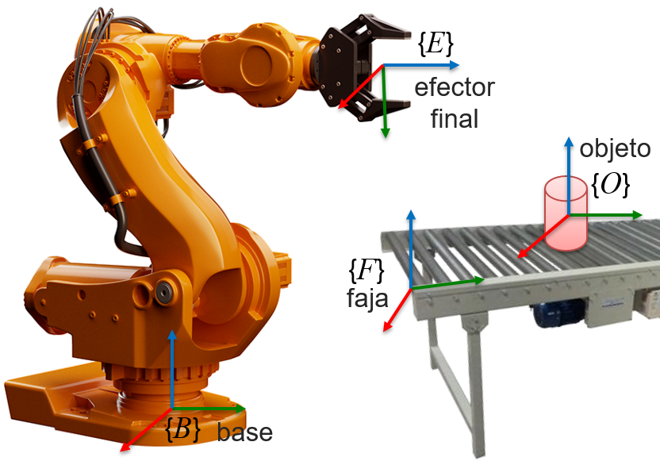
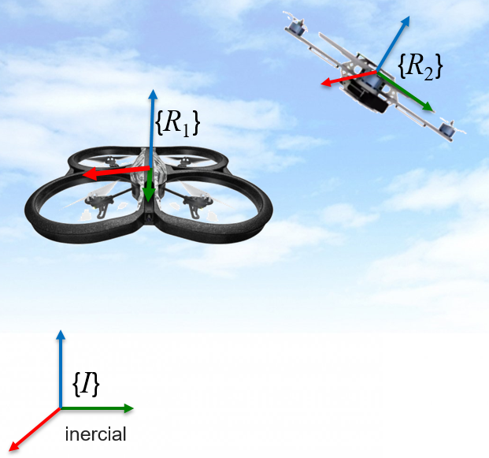
En robótica resulta común denominar al sistema que permanece inamovible como sistema inercial, sistema fijo, sistema del mundo (en ingles world frame), o sistema espacial (en inglés: spatial frame). Resulta importante representar todos los demás cuerpos rígidos con respecto a este sistema. Por otro lado, al sistema que se asocia a algún cuerpo rígido que forma parte del robot se le suele denominar, de manera general, como sistema del cuerpo (en inglés: body frame). Los términos sistema espacial y sistema del cuerpo son cada vez más utilizados, incluso en varios paquetes computacionales.
2.1.3 Transformaciones de Cuerpos Rígidos
La representación completa de la configuración de un robot se puede describir mediante la representación de la posición y orientación de cada uno de sus eslabones en cada instante de tiempo. Por ejemplo, para que un robot manipulador mueva su efector final de una configuración inicial a una configuración final, es necesario una serie de movimientos del efector final y de cada uno de los eslabones del robot. Esto requiere desplazar cada cuerpo rígido que compone al robot, y a este desplazamiento se le denomina una transformación de cuerpo rígido. Por tanto, las transformaciones rígidas están ligadas al movimiento que experimenta cada cuerpo rígido que es la base de la estructura del robot.
Una transformación de un cuerpo rígido, también llamada transformación rígida, es un mapa \(\g:\R^3 \rightarrow \R^3\) que representa un movimiento rígido y que cumple con las dos siguientes condiciones.
Preserva la distancia entre puntos del cuerpo rígido: \[ \Vert \g(\p_i)-\g(\p_j)\Vert = \Vert \p_i - \p_j \Vert, ~~\forall \p_i,\p_j \in \R^3. \]
Preserva la orientación relativa entre puntos del cuerpo rígido. Si se forma dos vectores utilizando tres puntos del cuerpo rígido, esta condición implica que se preserva el producto vectorial: \[ \overline{\g}(\vv \times \w) = \overline{\g}(\vv) \times \overline{\g} (\w), ~~ \forall \vv,\w \in \R^3, \] donde \(\overline{\g}\) es el mapa asociado con \(\g\) pero que actúa sobre vectores y no puntos. La preservación de la orientación evita reflexiones internas que no son físicamente realizables por objetos rígidos.
Algunas consecuencias de las condiciones anteriores que definen una transformación rígida, y que son útiles para demostrar algunas propiedades de la representación espacial de cuerpos rígidos, son: \(i\)) el producto punto, o producto interno, es preservado por las transformaciones de cuerpos rígidos: \[ \vv_1 \cdot \vv_2 = \overline{\g}(\vv_1) \cdot \overline{\g}(\vv_2); \] y, \(ii\)) un sistema coordenado ortonormal es transformado en otro sistema coordenado ortonormal, debido a que tanto el producto punto como el producto vectorial son preservados. La preservación del producto punto implica que vectores ortogonales (cuyo producto punto es cero) son transformados en vectores ortogonales.
La transformación rígida \(\g\) definida anteriormente es una transformación genérica, pero de manera concreta se trabajará con dos tipos de transformaciones: transformación de posición y transformación de orientación. Ambas transformaciones son necesarias para representar adecuadamente un cuerpo rígido en el espacio y, consecuentemente, las partes importantes del robot como, por ejemplo, el efector final de un manipulador, o el chasis de un robot móvil.
2.2 Posición de un Cuerpo Rígido
Considerar el cuerpo rígido con forma de caja mostrado en la Figura 2.2. La posición del cuerpo rígido se describe mediante la posición de un punto \(P\) cualquiera fijo en el cuerpo. A su vez, este punto \(P\) se representa mediante un vector posición \(\p=\overline{OP}\) con respecto a algún sistema de referencia externo cuyo origen es \(O\). Como se mencionó en la Sección 2.1.2, se suele asociar un sistema de coordenadas al cuerpo rígido, siendo común escoger la posición del origen de dicho sistema como la posición de todo el cuerpo. Dicho de otro modo, el vector posición del origen del sistema asociado con el cuerpo rígido describe su posición. En la Figura 2.2 el punto escogido para describir la posición del cuerpo es \(P\) pero podría ser, sin pérdida de generalidad, cualquier otro punto del cuerpo. Inclusive se podría escoger un punto fuera del cuerpo, siempre que se mueva de manera solidaria con el cuerpo.
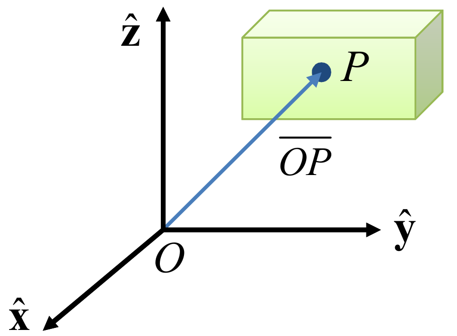
En general, en el espacio \(n\)-dimensional \(\R^n\) se requiere por lo menos \(n\) parámetros para describir por completo la posición. Por este motivo, la posición de un punto en el espacio \(\R^n\) tiene en general \(n\) grados de libertad. Los casos bidimensional y tridimensional son importantes en robótica.
En el espacio bidimensional \(\R^2\), la posición presenta dos grados de libertad dado que un vector posición está completamente descrito por dos parámetros independientes. Un ejemplo de estos parámetros son las coordenadas cartesianas \((x,y)\), o las coordenadas polares \((\rho, \theta)\).
En el espacio tridimensional \(\R^3\), la posición tiene tres grados de libertad dado que, sin importar la representación que se use, son necesarios tres parámetros independientes para representar la posición. Un ejemplo de estos parámetros son las coordenadas cartesianas \((x,y,z)\).
La posición de un punto \(P\) con respecto al origen \(O\) de un sistema de referencia queda completamente representada mediante un vector posición \(\p\). Según el sistema de referencia que se utilice, los componentes de este vector de posición variarán. Un punto \(P\) representado por el vector \(\p\) en el sistema \(\frame A\) se denotará como \(\ssv{A}{\p}{}\) y tendrá los siguientes componentes: \[ \ssv{A}{\p}{} = (\sv{A}{x},\sv{A}{y},\sv{A}{z}), \] donde el superíndice representa el sistema de referencia de cada componente. Los vectores siempre se representarán como vectores columna, pero al escribirlos en una fila se representarán como una tupla. El mismo vector posición, representado con respecto a un sistema de referencia llamado \(\frame B\) tendrá los siguientes componentes: \[ \ssv{B}{\p}{} = (\sv{B}{x},\sv{B}{y},\sv{B}{z}). \] Se debe notar que, a pesar de que el vector que describen es el mismo, se tiene que \(\ssv{A}{\p}{} \neq \ssv{B}{\p}{}\), debido a que sus sistemas de referencia son diferentes. En general, la posición con respecto a distintos sistemas de referencia tendrá distintos componentes, con distintos valores numéricos, aún cuando el punto descrito sea el mismo.
- Representaciones
- La posición se representa de forma diferente en los espacios Euclideanos \(\mathbb R^2\) y \(\mathbb R^3\). En el plano \(\mathbb R^2\) existen dos formas principales de representación: las coordenadas cartesianas \((x,y)\) y las coordenadas polares \((\rho, \theta)\). En el espacio tridimensional la posición se representa usualmente mediante coordenadas cartesianas, coordenadas cilíndricas, o coordenadas esféricas. Según la representación que se utilice, los componentes del vector posición serán diferentes, aún cuando el punto que describen sea el mismo.
En robótica, las coordenadas más utilizadas son las coordenadas cartesianas, tanto en el plano como en el espacio tridimensional. Sin embargo, en algunos casos específicos se utiliza otras coordenadas, como cuando la configuración del robot es semejante a la definición de estas coordenadas alternativas. A continuación se hará una descripción de estas formas de representación para el caso tridimensional.
2.2.1 Coordenadas Cartesianas
En coordenadas cartesianas, también denominadas coordenadas rectangulares, un punto \(P\) se representa mediante tres números reales, los cuales indican las magnitudes de las proyecciones perpendiculares en los tres ejes coordenados. Es práctica común denominar a cada coordenada con el nombre del eje asociado. En la Figura 2.3 (a), el vector posición \(\p\) que representa al punto \(P\) queda definido en coordenadas cartesianas como: \[ \p = (x, y, z) \] donde, dado un sistema de referencia formado por los ejes \(\hat\x\), \(\hat\y\), \(\hat\z\), los componentes cartesianos son las proyecciones en los ejes: \[ x = \p \cdot \hat\x,\qquad ~~ y = \p \cdot \hat\y, \qquad ~~ z = \p \cdot \hat\z. \] La operación \(\{\cdot\}\) denota el producto interno, también denominado producto escalar o producto punto, y representa la proyección en cada eje coordenado, ya que los ejes son vectores unitarios.
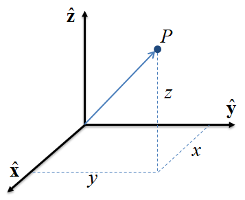
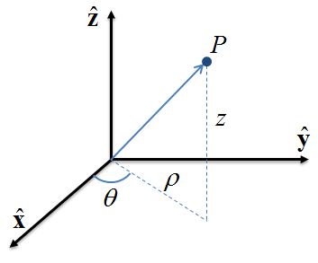
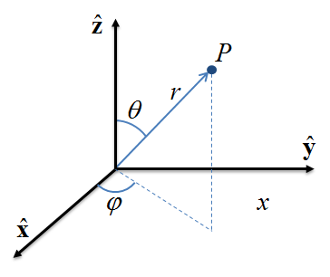
2.2.2 Coordenadas Cilíndricas
Las coordenadas cilíndricas son una generalización de las coordenadas polares de dos a tres dimensiones añadiendo la altura. Las tres coordenadas de un punto \(P\), mostrado en la Figura 2.3 (b), se definen de la siguiente manera.
Distancia radial \(\rho\): es la distancia Euclideana del eje \(\hat\z\) al punto \(P\). Se suele considerar como un valor únicamente positivo.
Ángulo de azimut \(\theta\): es el ángulo entre el eje \(\hat\x\) y el rayo que va desde el origen de coordenadas hasta la proyección de \(P\) en el plano \(xy\).
Altura \(z\): es la distancia (con signo) del plano \(xy\) al punto \(P\), donde el signo positivo está en la dirección del eje \(\hat\z\) positivo.
Usando la definición de estos componentes, el vector posición \(\p\) que representa la posición del punto \(P\) en coordenadas cilíndricas es \[ \p = (\rho, \theta, z). \] Otra notación para la distancia radial es \(r\) y para el ángulo de azimut es \(\phi\), llevando a la notación equivalente: \(\p=(r,\phi,z)\). Existen otras notaciones adicionales, pero son menos comunes.
Se debe tener en cuenta que los vectores unitarios en coordenadas cilíndricas, así como sus derivadas, tienen diferentes propiedades que las usuales en coordenadas cartesianas. Por este motivo, operaciones matemáticas como gradiente, rotacional, divergencia, Laplaciano, entre otras, tienen que ser manejadas con cuidado. De igual modo, debido a las propiedades particulares de los vectores unitarios, las coordenadas de la velocidad y aceleración son diferentes que en coordenadas cartesianas.
- Relación: Coordenadas Cartesianas y Cilíndricas
- Utilizando geometría básica se puede demostrar que la relación entre coordenadas Cartesianas y cilíndricas está dada por: \[ \begin{align*} x & = \rho\cos\theta, & \rho & = \sqrt{x^2+y^2} \\ y & = \rho\sen\theta, & \theta & = \atan2~\!(y,x) \end{align*} \] con los componentes antes definidos. El componente \(z\) no se incluye en estas ecuaciones debido a que es invariante en ambas representaciones. La función \(\atan2\), descrita con mayor detalle en el Apéndice A.3.1, es el arco tangente que toma en cuenta el cuadrante correcto de sus argumentos y permite que el ángulo de azimut \(\theta\) esté en el rango \((-180\grad, 180\grad)\).
2.2.3 Coordenadas Esféricas
Considerar un sistema de referencia con origen \(O\), y un punto \(P\), como se muestra en la Figura 2.3 (c). Las tres coordenadas esféricas de este punto \(P\) se definen en este sistema de referencia de la siguiente manera.
Radio o distancia radial \(r\): es la distancia Euclideana del origen \(O\) al punto \(P\).
Inclinación \(\theta\) (o ángulo polar): es el ángulo que existe desde el eje \(\hat\z\) hasta el segmento de recta \(OP\).
Azimut \(\varphi\) (o ángulo azimutal): es el ángulo con signo medido desde el eje \(\hat\x\) hacia la proyección ortogonal del segmento de línea \(OP\) en el plano \(xy\).
Usando estos componentes, el vector posición \(\p\) que representa al punto \(P\) en coordenadas esféricas es: \[ \p = (r, \theta, \varphi). \] El orden en el que aparecen el ángulo de inclinación y el ángulo azimutal no es estándar, ya que a veces se invierte el orden de los ángulos como \((r,\varphi,\theta)\). Más aún, en ocasiones se utiliza la variable \(\varphi\) para la inclinación y \(\theta\) para el azimut, lo cual puede resultar confuso. Debido a esta falta de estandarización, cuando se trabaja con coordenadas esféricas es necesario tener claro la convención que se está utilizando, para evitar confusiones.
Al igual que en coordenadas cilíndricas, se debe tener en cuenta que los vectores unitarios en coordenadas esféricas y sus derivadas tienen diferentes propiedades que en coordenadas cartesianas. Igualmente, operaciones matemáticas como gradiente, rotacional, divergencia, Laplaciano, entre otras, tienen que ser manejadas con cuidado en coordenadas esféricas. Asimismo, los componentes resultantes para la velocidad y aceleración son diferentes que en coordenadas cartesianas o cilíndricas.
- Relación: Coordenadas Esféricas y Cartesianas
- A partir de un simple análisis geométrico se puede demostrar las siguientes relaciones de las coordenadas esféricas con las coordenadas Cartesianas: \[ \begin{align*} x & = r~\sen\theta\cos\varphi & r & = \sqrt{x^2+y^2+z^2} \\ y & = r~\sen\theta\sen\varphi & \theta &=\cos^{-1}\left(\frac{z}{r} \right)\\ z & = r\cos\theta & \varphi & = \atan2~\!(y,x) \end{align*} \] donde el radio es positivo \(r \geq 0\), la inclinación \(\theta\) está limitada por \(0 \leq \theta \leq\pi\), y el azimut \(\varphi\) por \(0 \leq \varphi < 2\pi\).
- Relación: Coordenadas Esféricas y Cilíndricas
- Debido a que el ángulo \(\theta\) se utiliza tanto en las coordenadas esféricas como en las cilíndricas pero con significados diferentes, se denotará a las coordenadas cilíndricas utilizando la siguiente notación: \((\rho,\theta_c,z)\), donde la única diferencia es el uso de \(\theta_c\) para el ángulo de azimut. La notación para las coordenadas esféricas será la misma utilizada anteriormente. Con esta observación, y usando argumentos geométricos, la relación entre las coordenadas esféricas y las coordenadas cilíndricas está dada por: \[ \begin{align*} \rho & = r~\sen\theta & r & = \sqrt{\rho^2+z^2} \\ \theta_c & = \varphi & \theta & = \atan2~\!(\rho,z) \\ z & = r\cos\theta & \varphi & = \theta_c \end{align*} \] Una alternativa a estas transformaciones directas consiste en utilizar las coordenadas cartesianas como elementos de transformación intermedios. Es decir, se puede convertir primero a coordenadas cartesianas y luego de estas coordenadas al sistema coordenado deseado.
2.3 Orientación de un Cuerpo Rígido
Como se mencionó en la Sección 2.1.2, para poder representar completamente un cuerpo rígido no basta con especificar su posición, sino que se requiere además especificar su orientación. En la Sección 2.2 se describió que para representar la posición del cuerpo es necesario representar la posición de un punto \(P\) sobre el mismo, con respecto a algún sistema de referencia independiente del cuerpo rígido. Este sistema suele recibir el nombre de sistema inercial si permanece inamovible, y se le asignará arbitrariamente el nombre de \(\frame A\) en la Figura 2.4. Para representar la orientación, el punto \(P\) sobre el cuerpo se utiliza como el origen de un sistema de coordenadas \(\frame B\), el cual estará fijo en el cuerpo rígido, de tal modo que si el cuerpo se mueve, este sistema experimenta el mismo movimiento. La relación entre el sistema del cuerpo \(\frame B\) y el sistema inercial de referencia \(\frame A\) determina la orientación del cuerpo.
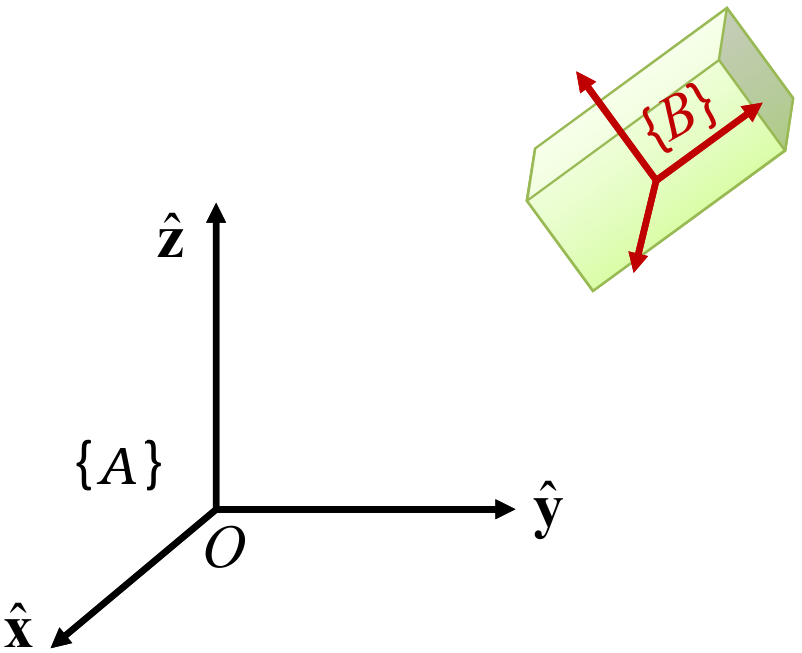
Existen varias formas de representar la relación existente entre ambos sistemas de referencia y, por tanto, de representar la orientación de un cuerpo rígido. La forma canónica de hacerlo es mediante la denominada matriz de rotación, cuyas columnas representan los ejes de un sistema expresado en el otro sistema. Esta matriz puede ser parametrizada dando origen a otras formas de representación, las cuales principalmente son ángulos de Euler, representación eje-ángulo y cuaterniones. Esta sección describe las matrices de rotación así como sus propiedades fundamentales. Las otras parametrizaciones se describen en el capítulo 3.
2.3.1 Matriz de Rotación
Considérese un sistema coordenado \(\frame A\) constituido por los ejes unitarios \(\hat \x_{\!_A}\), \(\hat \y_{\!_A}\), \(\hat \z_{\!_A}\). Dado que estos ejes son vectores que representan las coordenadas canónicas del sistema \(\frame A\), pueden ser expresados con respecto a \(\frame A\) como \[ \begin{equation*} \ssv{A}{\hat \x}{A} = \bm{1 \\ 0 \\ 0}, \qquad \ssv{A}{\hat \y}{A} = \bm{0 \\ 1 \\ 0}, \qquad \ssv{A}{\hat \z}{A} = \bm{0 \\ 0 \\ 1}, \end{equation*} \] donde el superíndice \(^A\) de la izquierda denota que cada vector está representado en el sistema \(\frame A\), y el subíndice de la derecha indica que los ejes pertenecen al sistema \(\frame A\). Considérese además un sistema coordenado \(\frame B\) definido por los ejes unitarios \(\hat \x_{\!_B}\), \(\hat \y_{\!_B}\), \(\hat \z_{\!_B}\). Al igual que en el caso anterior, los vectores \(\hat \x_{\!_B}\), \(\hat \y_{\!_B}\), \(\hat \z_{\!_B}\) pueden ser representados en el sistema \(\frame B\) como \[ \begin{equation*} \ssv{B}{\hat \x}{B} = \bm{1 \\ 0 \\ 0}, \qquad \ssv{B}{\hat \y}{B} = \bm{0 \\ 1 \\ 0}, \qquad \ssv{B}{\hat \z}{B} = \bm{0 \\ 0 \\ 1} \end{equation*} \] dado que son los ejes canónicos del sistema \(\frame B\). Finalmente, considérese que ambos sistemas tienen el mismo punto de origen pero una orientación completamente diferente, como se muestra en la Figura 2.5. El problema de la orientación consiste en describir al sistema \(\frame B\) con respecto al sistema \(\frame A\).
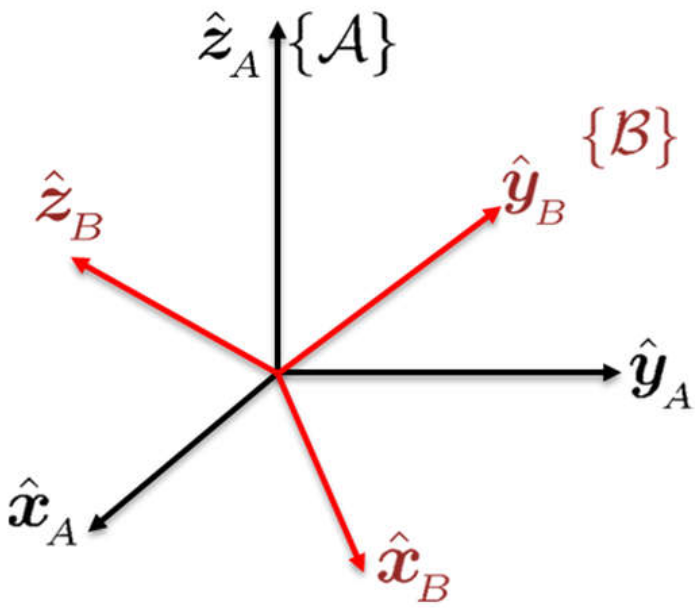
Como se mencionó en la Sección 2.1.1, un sistema de referencia está completamente descrito por sus ejes unitarios. Así, la orientación de \(\frame B\) con respecto a \(\frame A\) está completamente descrita al expresar cada uno de los ejes del sistema \(\frame B\) en el sistema \(\frame A\) o, equivalentemente, al proyectar cada eje de \(\frame B\) en \(\frame A\). Esta proyección se realiza utilizando el producto escalar dado que los ejes coordenados son unitarios. La proyección de cada eje del sistema \(\frame B\) en el sistema \(\frame A\) está dada por: \[ \begin{align*} \ssv{A}{\hat \x}{B} & = (\hat \x_{\!_B} \cdot \hat \x_{\!_A})\hat \x_{\!_A} + (\hat \x_{\!_B} \cdot \hat \y_{\!_A})\hat \y_{\!_A} + (\hat \x_{\!_B} \cdot \hat \z_{\!_A})\hat \z_{\!_A} \\ \ssv{A}{\hat \y}{B} & = (\hat \y_{\!_B} \cdot \hat \x_{\!_A})\hat \x_{\!_A} + (\hat \y_{\!_B} \cdot \hat \y_{\!_A})\hat \y_{\!_A} + (\hat \y_{\!_B} \cdot \hat \z_{\!_A})\hat \z_{\!_A} \\ \ssv{A}{\hat \z}{B} & = (\hat \z_{\!_B} \cdot \hat \x_{\!_A})\hat \x_{\!_A} + (\hat \z_{\!_B} \cdot \hat \y_{\!_A})\hat \y_{\!_A} + (\hat \z_{\!_B} \cdot \hat \z_{\!_A})\hat \z_{\!_A}, \end{align*} \] donde para cada vector, el primer sumando es el componente en la dirección de \(\hat\x_{\!_A}\), el segundo es el componente en la dirección de \(\hat\y_{\!_A}\), y el tercero es el componente en la dirección de \(\hat\z_{\!_A}\). Cuando se expresa un vector en el sistema \(\frame A\), la primera coordenada se encuentra en la dirección de \(\hat \x_{\!_A}\), la segunda en la dirección de \(\hat \y_{\!_A}\) y la tercera en la dirección de \(\hat \z_{\!_A}\). Debido a esto, los componentes de los vectores \(\ssv{A}{\hat \x}{B}\), \(\ssv{A}{\hat \y}{B}\), \(\ssv{A}{\hat \z}{B}\) anteriores pueden ser expresados en el sistema \(\frame A\) de forma vectorial como \[ \begin{equation*} \ssv{A}{\hat \x}{B} = \bm{ \hat \x_{\!_B} \cdot \hat \x_{\!_A} \\ \hat \x_{\!_B} \cdot \hat \y_{\!_A} \\ \hat \x_{\!_B} \cdot \hat \z_{\!_A}}, \qquad \ssv{A}{\hat \y}{B} = \bm{ \hat \y_{\!_B} \cdot \hat \x_{\!_A} \\ \hat \y_{\!_B} \cdot \hat \y_{\!_A} \\ \hat \y_{\!_B} \cdot \hat \z_{\!_A}}, \qquad \ssv{A}{\hat \z}{B} = \bm{ \hat \z_{\!_B} \cdot \hat \x_{\!_A} \\ \hat \z_{\!_B} \cdot \hat \y_{\!_A} \\ \hat \z_{\!_B} \cdot \hat \z_{\!_A}}. \end{equation*} \]
Las expresiones \(\ssv{A}{\hat \x}{B}\), \(\ssv{A}{\hat \y}{B}\), \(\ssv{A}{\hat \z}{B}\) describen por completo al sistema \(\frame B\) con respecto al sistema \(\frame A\). Estos tres vectores pueden ser escritos como vectores columna de una matriz \(\Rot\) de la siguiente forma: \[ \begin{equation*} \Rot = \bm{| & | & | \\ \ssv{A}{\hat \x}{B} & \ssv{A}{\hat \y}{B} & \ssv{A}{\hat \z}{B} \\ | & | & |} \end{equation*} \] donde las líneas verticales indican que cada elemento de la matriz es en realidad un vector columna. Utilizando esta matriz \(\Rot\), los ejes del sistema \(\frame B\) son representados en el sistema \(\frame A\) como \[ \begin{equation*} \ssv{A}{\hat \x}{B} = \Rot ~\ssv{B}{\hat \x}{B}, \qquad \ssv{A}{\hat \y}{B} = \Rot ~\ssv{B}{\hat \y}{B}, \qquad \ssv{A}{\hat \z}{B} = \Rot ~\ssv{B}{\hat \z}{B}, \end{equation*} \] lo cual puede ser verificado realizando el producto indicado término a término. Debido a que la matriz \(\Rot\) expresa los ejes del sistema \(\frame B\) con respecto al sistema \(\frame A\), y son estos ejes los que describen completamente a un sistema (ya que forman una base ortonormal), se dice que \(\Rot\) representa la orientación de \(\frame B\) con respecto a \(\frame A\). De manera equivalente, la matriz \(\Rot\) representa la rotación del sistema \(\frame B\) con respecto al sistema \(\frame A\) y se denomina matriz de rotación. La notación utilizada para hacer esto explícito es: \[ \begin{equation*} \Rot = \ssr{A}{B} \end{equation*} \] donde el subíndice y el superíndice indican que se representa la orientación del sistema \(\frame B\) con respecto al sistema \(\frame A\). El superíndice izquierdo indica el sistema de referencia, mientras que el subíndice derecho indica el sistema actual. Otras notaciones utilizadas para representar \(\ssr{A}{B}\) son: \(\Rot^{A}_{_B}\), \({^{A}_{_B}}\Rot\) o \(\Rot_{_{AB}}\), pero en este libro se utilizará la notación \(\ssr{A}{B}\) por facilidad.
En resumen, la matriz de rotación que representa la orientación de un sistema \(\frame B\) con respecto a un sistema \(\frame A\) es: \[ \boxed{ \ssr{A}{B} = \bm{\ssv{A}{\hat \x}{B} & \ssv{A}{\hat \y}{B} & \ssv{A}{\hat \z}{B}} = \bm{ \hat \x_{\!_B} \cdot \hat \x_{\!_A} & \hat \y_{\!_B} \cdot \hat \x_{\!_A} & \hat \z_{\!_B} \cdot \hat \x_{\!_A} \\ \hat \x_{\!_B} \cdot \hat \y_{\!_A} & \hat \y_{\!_B} \cdot \hat \y_{\!_A} & \hat \z_{\!_B} \cdot \hat \y_{\!_A} \\ \hat \x_{\!_B} \cdot \hat \z_{\!_A} & \hat \y_{\!_B} \cdot \hat \z_{\!_A} & \hat \z_{\!_B} \cdot \hat \z_{\!_A} }}. \tag{2.1}\]
Debido a que la norma de cada eje coordenado es la unidad (se trata de vectores unitarios), el producto punto representa solamente el coseno del ángulo existente entre el respectivo par de ejes coordenados. Por ejemplo, \(\hat \x_{\!_B} \cdot \hat \y_{\!_A}=\cos(\theta_{x_{_B},y{_A}})\), donde \(\theta_{x_{_B},y{_A}}\) representa el ángulo entre los ejes \(\hat \x_{\!_B}\) y \(\hat \y_{\!_A}\). Así, la matriz de rotación en realidad expresa el coseno de los ángulos entre los ejes y está compuesta solamente por cosenos (o sus simplificaciones trigonométricas). Por este motivo, a las columnas de la matriz de rotación también se les denomina cosenos directores.
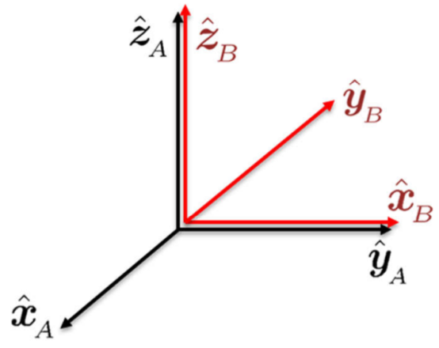
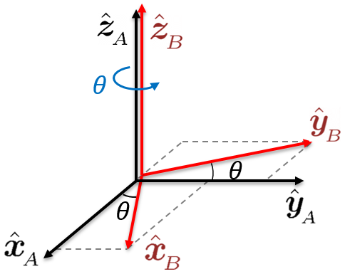
2.3.2 Rotaciones Elementales
Se denomina rotaciones elementales o rotaciones canónicas a aquellas rotaciones que se realizan alrededor de cada uno de los ejes canónicos \(\hat\x\), \(\hat\y\), \(\hat\z\) de cualquier sistema de referencia. La expresión matricial de cada una de estas matrices se puede obtener utilizando Ecuación 2.1 como se realizó en el Ejemplo 2.3. A continuación se presenta las expresiones asociadas a cada una de estas rotaciones.
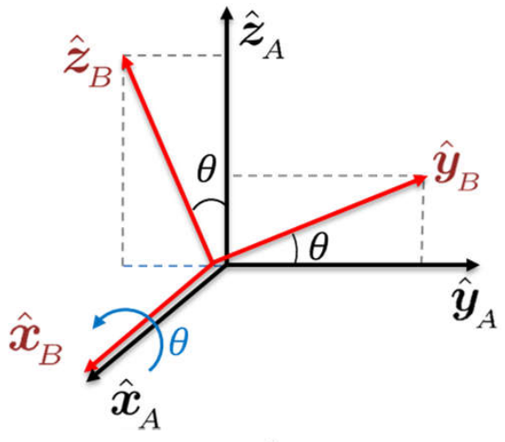
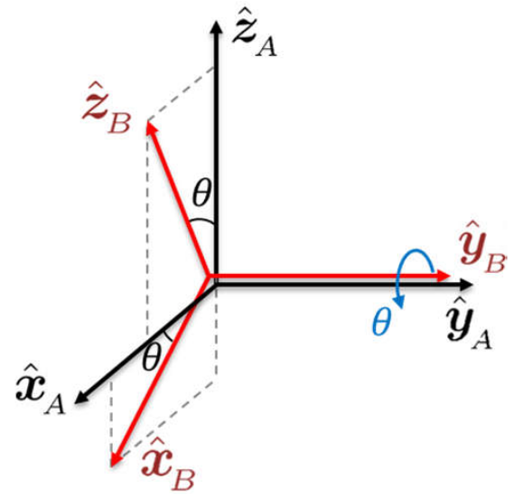
La rotación de un ángulo \(\theta\) alrededor del eje \(x\), esquematizado en la Figura 2.8 (a), se representa como \(\Rot_x(\theta)\) y está dada por: \[ \Rot_x(\theta) = \bm{1 & 0 & 0 \\ 0 & \cos\theta & -\sen\theta \\ 0 & \sen\theta & \cos\theta} \tag{2.2}\]
La rotación de un ángulo \(\theta\) alrededor del eje \(y\), mostrado en la Figura 2.8 (b), se representa como \(\Rot_y(\theta)\) y está dada por: \[ \Rot_y(\theta) = \bm{\cos\theta & 0 & \sen\theta \\ 0 & 1 & 0 \\ -\sen\theta & 0 & \cos\theta} \tag{2.3}\]
La rotación de un ángulo \(\theta\) alrededor del eje \(z\), como se ve en la Figura 2.8 (c), se representa como \(\Rot_z(\theta)\) y está dada por: \[ \Rot_z(\theta) = \bm{\cos\theta & -\sen\theta & 0\\ \sen\theta & \cos\theta & 0 \\ 0 & 0 & 1} \tag{2.4}\]
La importancia de las rotaciones canónicas radica en que, como se verá en la Sección 3.1, es posible expresar cualquier rotación arbitraria en el espacio a partir de su adecuada combinación; es decir, a partir de multiplicaciones adecuadas.
- Algunas propiedades
-
Las matrices de rotación elementales (en \(x\), \(y\) y \(z\)) cumplen las siguientes propiedades, las cuales pueden ser verificadas de manera directa reemplazando valores: \[ \begin{align*} %\label{eq:rot-elemental-propiedad} \Rot_k(0) & = I \\ \Rot_k(\theta_1)\Rot_k(\theta_2) & = \Rot_k(\theta_1+\theta_2) \\ \Rot_k(-\theta) & = \Rot_k^T(\theta) \end{align*} \] donde \(k=x,y,z\). La primera propiedad indica que una rotación de cero grados es igual a la matriz identidad. La segunda propiedad indica que si se rota sucesivamente dos ángulos alrededor del mismo eje, el resultado es igual a una rotación de la suma de los ángulos. La tercera propiedad muestra que la rotación de un ángulo negativo es equivalente a la transpuesta del ángulo positivo. En general, estas propiedades no solo son válidas para los ejes canónicos sino para cualquier eje \(\vect k\).
2.3.3 Matriz de Rotación Inversa
La matriz de rotación genérica dada en la Ecuación 2.1 relaciona al sistema \(\frame B\) con respecto al sistema \(\frame A\). Un procedimiento similar al que se utilizó para su obtención puede ser usado para determinar la relación opuesta; es decir, la matriz de rotación \(\ssr{B}{A}\) que expresa al sistema \(\frame A\) con respecto al sistema \(\frame B\). Siguiendo este procedimiento se obtiene los componentes de \(\ssr{B}{A}\) como: \[ \begin{equation*} \ssr{B}{A} = \bm{\ssv{B}{\hat \x}{A} & \ssv{B}{\hat \y}{A} & \ssv{B}{\hat \z}{A}} = \bm{ \hat \x_{\!_A} \cdot \hat \x_{\!_B} & \hat \y_{\!_A} \cdot \hat \x_{\!_B} & \hat \z_{\!_A} \cdot \hat \x_{\!_B} \\ \hat \x_{\!_A} \cdot \hat \y_{\!_B} & \hat \y_{\!_A} \cdot \hat \y_{\!_B} & \hat \z_{\!_A} \cdot \hat \y_{\!_B} \\ \hat \x_{\!_A} \cdot \hat \z_{\!_B} & \hat \y_{\!_A} \cdot \hat \z_{\!_B} & \hat \z_{\!_A} \cdot \hat \z_{\!_B} }. \end{equation*} \] Debido a que el producto punto es conmutativo, se puede observar que las filas de \(\ssr{B}{A}\) son las columnas de \(\ssr{A}{B}\). Haciendo uso de esta observación se puede escribir la matriz \(\ssr{B}{A}\) anterior como: \[ \begin{equation*} \ssr{B}{A} = \bm{\\[-0.9em] \ssv{A}{\hat \x}{B}^T \\[0.5em] \ssv{A}{\hat \y}{B}^T \\[0.5em] \ssv{A}{\hat \z}{B}^T}, \end{equation*} \] donde cada vector \(\ssv{A}{\hat \x}{B}\), \(\ssv{A}{\hat \y}{B}\), \(\ssv{A}{\hat \z}{B}\) es un vector columna. Comparando esta expresión de \(\ssr{B}{A}\) con la expresión de \(\ssr{A}{B}\) en Ecuación 2.1, se observa que \(\ssr{B}{A}\) es la transpuesta de \(\ssr{A}{B}\), lo cual se representa como \[ \ssr{B}{A} = (\ssr{A}{B})^T. \tag{2.5}\] A partir de Ecuación 2.5 se concluye que la matriz que representa la orientación del sistema \(\frame A\) con respecto al sistema \(\frame B\) es la transpuesta de la matriz que representa la orientación del sistema \(\frame B\) con respecto al sistema \(\frame A\). Esto indica que para obtener la representación opuesta de la orientación basta con tomar la transpuesta de la matriz de rotación respectiva.
Por otro lado, utilizando las expresiones anteriores obtenidas para \(\ssr{A}{B}\) y \(\ssr{B}{A}\), el producto de ambas matrices se expresa como: \[ \begin{equation*} \ssr{B}{A}\ssr{A}{B} = \bm{\\[-0.9em] \ssv{A}{\hat \x}{B}^T \\[0.5em] \ssv{A}{\hat \y}{B}^T \\[0.5em] \ssv{A}{\hat \z}{B}^T} \bm{\ssv{B}{\hat \x}{A} & \ssv{B}{\hat \y}{A} & \ssv{B}{\hat \z}{A}} = \bm{ \ssv{A}{\hat \x}{B}^T \ssv{A}{\hat \x}{B} & \ssv{A}{\hat \x}{B}^T \ssv{A}{\hat \y}{B} & \ssv{A}{\hat \x}{B}^T \ssv{A}{\hat \z}{B} \\[0.5em] \ssv{A}{\hat \y}{B}^T \ssv{A}{\hat \x}{B} & \ssv{A}{\hat \y}{B}^T \ssv{A}{\hat \y}{B} & \ssv{A}{\hat \y}{B}^T \ssv{A}{\hat \z}{B} \\[0.5em] \ssv{A}{\hat \z}{B}^T \ssv{A}{\hat \x}{B} & \ssv{A}{\hat \z}{B}^T \ssv{A}{\hat \y}{B} & \ssv{A}{\hat \z}{B}^T \ssv{A}{\hat \z}{B} }. \end{equation*} \] Dado que los vectores \(\ssv{A}{\hat \x}{B}\), \(\ssv{A}{\hat \y}{B}\), \(\ssv{A}{\hat \z}{B}\) son unitarios, se tiene que su producto escalar consigo mismos es \(\ssv{A}{\hat \x}{B}^T \ssv{A}{\hat \x}{B} = \ssv{A}{\hat \y}{B}^T \ssv{A}{\hat \y}{B} = \ssv{A}{\hat \z}{B}^T \ssv{A}{\hat \z}{B} = 1\). Estos vectores además representan los ejes coordenados de un sistema de referencia, y por tanto son mutuamente ortogonales, lo cual implica que el producto punto de un vector con cualquier otro es nulo (\(\ssv{A}{\hat \x}{B}^T \ssv{A}{\hat \y}{B} = \ssv{A}{\hat \x}{B}^T \ssv{A}{\hat \z}{B} = \ssv{A}{\hat \y}{B}^T \ssv{A}{\hat \z}{B} = 0\)). Con estas dos observaciones, que implican que los vectores forman una base ortonormal, la matriz anterior se simplifica a \[bo \ssr{B}{A}\ssr{A}{B} = \bm{1 & 0 & 0 \\ 0 & 1 & 0 \\ 0 & 0 & 1} = I \] donde \(I\) es la matriz identidad. Postmultiplicando ambos miembros de la igualdad por \((\ssr{A}{B})^{-1}\) se tiene que \[ \ssr{B}{A} = (\ssr{A}{B})^{-1}. \tag{2.6}\] Al comparar Ecuación 2.5 con Ecuación 2.6 se puede concluir que para una matriz de rotación su transpuesta es igual a su inversa: \[ \boxed{ (\ssr{A}{B})^T = (\ssr{A}{B})^{-1}}. \tag{2.7}\]
Este resultado muestra además que las matrices de rotación son matrices ortogonales dado que Ecuación 2.7 se cumple para cualquier matriz ortogonal. Para simplificar la notación, y cuando esté claro o no sea esencial representar el sistema de referencia de manera explícita, en las secciones siguientes cuando se haga referencia a matrices de rotación se utilizará solamente \(\Rot\) sin subíndices ni superíndices.
2.3.4 Grupo de Rotación
Como se vio en la sección anterior, las matrices de rotación cumplen con algunas propiedades que las distinguen del resto de matrices. En esta sección se presentará con más detalle estas propiedades y se definirá de manera formal a una matriz de rotación como un elemento del grupo de rotación llamado \(SO(3)\). Este grupo es importante desde un punto de vista matemático, y su estudio, así como sus componentes relacionados, generaliza el concepto de rotación.
- Propiedades Fundamentales de una Matriz de Rotación
-
Considérese una matriz \(\Rot \in \R^{3 \times 3}\). Si \(\Rot\) es una matriz de rotación cualquiera, entonces cumple las siguientes dos propiedades.
\(\Rot\) es una matriz ortogonal: \[ \Rot \Rot^T = \Rot^T\Rot = I. \tag{2.8}\] Prueba. El hecho que para una matriz de rotación su transpuesta sea su inversa ha sido demostrado de manera informal en la obtención de Ecuación 2.7. Aquí se seguirá un procedimiento semejante pero utilizando componentes genéricos. Considérese que la matriz de rotación \(\Rot\) está compuesta por los vectores columna \(\rr_1\), \(\rr_2\) y \(\rr_3\), tal que se puede representar como \[ \Rot = \bm{\rr_1 & \rr_2 & \rr_3}. \] Por definición, estos vectores \(\rr_1\), \(\rr_2\), \(\rr_3\) son unitarios y representan los ejes mutuamente ortogonales de algún sistema coordenado, lo cual se puede representar matemáticamente como \[ \rr_i^T\rr_j = \begin{cases} 0,\quad \text{si } i \neq j \\ 1,\quad \text{si } i = j \end{cases}. \tag{2.9}\] A los vectores cuyo producto escalar cumple con esta propiedad se les denomina vectores ortonormales. Por tanto, se ve que las columnas de la matriz \(\Rot\) son ortonormales, y sus filas son también ortonormales. Equivalentemente, las columnas (y las filas) de \(\Rot\) constituyen una base ortonormal de \(\R^3\). La propiedad Ecuación 2.9 de cada \(\rr_i\) se puede utilizar para simplificar los componentes del producto \(\Rot^T\Rot\), llegando a: \[ \begin{align*} \Rot^T\Rot & = \bm{- & \rr_1^T & - \\ - & \rr_2^T & - \\ - & \rr_3^T & -} \bm{| & | & | \\ \rr_1 & \rr_2 & \rr_3 \\ | & | & |} \\ & = \bm{ \rr_1^T \rr_1 & \rr_1^T \rr_2 & \rr_1^T \rr_3 \\ \rr_2^T \rr_1 & \rr_2^T \rr_2 & \rr_2^T \rr_3 \\ \rr_3^T \rr_1 & \rr_3^T \rr_2 & \rr_3^T \rr_3 } = \bm{1 & 0 & 0 \\ 0 & 1 & 0 \\ 0 & 0 & 1} \end{align*} \] Esto muestra que el producto de la transpuesta de una matriz de rotación con la misma matriz es la identidad. Dado que la transpuesta de una matriz de rotación es también una matriz de rotación se tiene \((\Rot^T)^T(\Rot^T)=\Rot\Rot^T=I\), lo cual verifica que el producto de \(\Rot\) con su transpuesta por la derecha o por la izquierda da como resultado la identidad: \(\Rot^T\Rot = \Rot\Rot^T = I\). Esto, a su vez, permite concluir que la transpuesta es igual a la inversa: \(\Rot^T = \Rot^{-1}\).
La propiedad Ecuación 2.9, que está siendo aplicada a tres vectores en \(\mathbb R^3\), en realidad implica seis ecuaciones (para \(\rr_1^T\rr_1\), \(\rr_2^T\rr_2\), \(\rr_3^T\rr_3\), \(\rr_1^T\rr_2\), \(\rr_1^T\rr_3\), y \(\rr_2^T\rr_3\)). Estas seis ecuaciones implican seis restricciones a los componentes de \(\Rot\). Por este motivo, si bien la matriz \(\Rot\) tiene 9 elementos, existen 6 restricciones entre columnas (o filas), y \(\Rot\) solamente tiene \(9-6=3\) grados de libertad. Así, la matriz de rotación es una representación redundante de la orientación, ya que tiene más parámetros que los estrictamente necesarios.
El determinante de \(\Rot\) es: \[ \det \Rot = +1. \tag{2.10}\] Prueba. La propiedad 1 establece que \(\Rot \Rot^T=I\). Aplicando el determinante a esta igualdad, y utilizando propiedades del determinante, se tiene que \(\det (\Rot) \det(\Rot^T)=\det{(I)}\). Para cualquier matriz se cumple \(\det (\Rot)= \det{(\Rot^T)}\), y además se tiene \(\det(I) = 1\). Así, se llega a \((\det \Rot)^2=1\), cuya solución es \(\det \Rot=\pm 1\). Si se considera un sistema dextrógiro, se puede demostrar que solo se mantiene el signo positivo. De manera concreta, considérese que la matriz \(\Rot\) tiene columnas \(\x, \y, \z\) (en ese orden), donde cada vector columna está dado por \(\x=(x_1,x_2,x_3)\), \(\y=(y_1,y_2,y_3)\), \(\z=(z_1,z_2,z_3)\). Con esta notación, el determinante se puede escribir de forma explícita como \[ \det \Rot=x_{1}(y_{2}z_{3}-y_{3}z_{2})-x_{2}(y_{1}z_{3}-y_{3}z_{1})+x_{3}(y_{1}z_{2}-y_{2}z_{1}). \] Todo sistema dextrógiro con ejes \(\x,\y,\z\) satisface las propiedades: \(\x \times \y = \z\), \(\y \times \z = \x\), \(\z \times \x = \y\). Escribiendo término a término el segundo producto cruz se tiene \(\y \times \z = (y_2z_3-y_3z_2, z_1y_3-y_1z_3,y_1z_2-z_1y_2)\), que a su vez es igual a \((x_1,x_2,x_3)\). Reemplazando estas equivalencias de \(x_1,x_2,x_3\) en la expresión anterior del determinante, se llega a \[ \det \Rot = x_1(x_1) - x_2(x_2) + x_3 (x_3) = 1, \] ya que el vector \(\x\) es unitario. Así, se prueba que en un sistema dextrógiro el determinante de la matriz de rotación siempre es positivo e igual a 1.
Como se mencionó en la primera propiedad, debido a que la matriz de rotación solo tiene 3 grados de libertad pero utiliza 9 elementos, la representación de la rotación u orientación a través de una matriz de rotación es redundante. Para contrarrestar este problema de redundancia, y expresar la rotación con menos parámetros, se recurre a las parametrizaciones de la rotación, las cuales se describen en el capítulo 3.
- Grupo Ortogonal Especial
-
De manera matemáticamente formal, todas las matrices de rotación en el espacio tridimensional pertenecen al grupo matemático denominado Grupo Ortogonal Especial y representado por \(SO(3)\). Se denomina ortogonal porque está compuesto por matrices ortogonales, y especial porque el determinante de sus elementos es estrictamente \(+1\) (y no \(\pm 1\) como sucede en cualquier matriz ortogonal). A este grupo también se le conoce como el grupo de rotación en \(\R^3\).
Definición. El grupo ortogonal especial \(SO(3)\), también llamado grupo de rotación en \(\R^3\), se define como: \[ SO(3) = \{\Rot \in \R^{3 \times 3}: \Rot \Rot^T=I,~\det \Rot = +1\}. \tag{2.11}\]
Utilizando esta definición, cualquier matriz de rotación en el espacio tridimensional \(\Rot\) pertenece a este grupo matemático; es decir, \(\Rot \in SO(3)\). Para el caso bidimensional, las matrices que describen las rotaciones en el plano pertenecen al grupo \(SO(2)\) y la definición es semejante a la anterior reemplazando \(3\) por \(2\). En general, las matrices de rotación en \(\R^n\) pertenecen al grupo \(SO(n)\). La definición de \(SO(3)\) utiliza las dos propiedades vistas anteriormente.
El grupo de matrices de rotación \(SO(3)\) es un grupo bajo la operación de multiplicación matricial y cumple con las cuatro propiedades que definen a un grupo matemático (las cuales se puede encontrar en el Apéndice A.3.2). En particular, el elemento identidad es la identidad matricial \(I\), y la inversa es la transpuesta de la matriz. Más aún, \(SO(3)\) es un grupo de Lie dado que las matrices \(\Rot\) forman una variedad matemática continua, y además las funciones que representan la multiplicación y la inversa son continuas y diferenciables.
2.3.5 Matriz de Rotación como Transformación Rígida
Como se vio en la Sección 2.1.3, una transformación de cuerpo rígido debe preservar tanto la distancia como la orientación relativa entre cada punto de un cuerpo rígido. Dada una matriz de rotación \(\Rot \in SO(3)\), se puede probar que esta matriz satisface las siguientes propiedades:
Preserva la distancia:
\(\Vert \Rot \p - \Rot \q \Vert = \Vert \p - \q \Vert, ~\forall \p,\q \in \R^3\). Esta propiedad significa que la norma euclideana (distancia) entre cualquier par de puntos \(\p\) y \(\q\) permanece constante luego de aplicar la misma matriz de rotación \(\Rot\) a ambos puntos.
Para demostrarlo, se probará que el cuadrado de la norma en ambos términos es el mismo. La norma al cuadrado del término al cual se le aplicó la matriz de rotación se puede expresar como \(\Vert \Rot \p - \Rot \q \Vert^2 = (\Rot\p-\Rot\q)^T(\Rot\p-\Rot\q)\). Utilizando propiedades de la transpuesta, y luego factorización, esto es igual a \[ (\p^T\Rot^T-\q^T\Rot^T)(\Rot\p-\Rot\q) = (\p^T-\q^T)\Rot^T\Rot(\p-\q) \] En esta expresión se usa \(\Rot^T\Rot=I\) y la propiedad de la transpuesta, quedando: \[ (\p-\q)^T(\p-\q)=\Vert \p-\q\Vert^2, \] lo cual demuestra que la matriz de rotación no alterna la norma euclideana.
Preserva la orientación:
\(\Rot (\vv \times \w) = \Rot \vv \times \Rot \w, ~\forall \vv,\w \in \R^3\). Esta propiedad significa que si se aplica la rotación \(\Rot\) al vector resultante de \(\vv\times\w\), el resultado es el mismo que si se rota a ambos vectores \(\vv\) y \(\w\) y luego de rotados se aplica el producto cruz. La demostración de esta propiedad se puede obtener mediante un cálculo directo de cada uno de los términos de las expresiones.
Debido a que la matriz de rotación \(\Rot\) cumple con ambas condiciones que definen una transformación de cuerpo rígido, se verifica que describe siempre una transformación de cuerpo rígido. Sin embargo, debe tenerse en cuenta que solo describe la orientación, mas no la traslación.
2.4 Interpretaciones de la Matriz de Rotación
Dependiendo del contexto en el que se utilice, una matriz de rotación \(\Rot\) posee las siguientes tres interpretaciones geométricas.
Representa la orientación: sus vectores columna representan los ejes del sistema rotado con respecto al sistema inicial.
Es un mapa de transformación de coordenadas: mapea un punto de un sistema de referencia a otro sistema de referencia.
Es un operador de rotación: rota un punto en un mismo sistema de coordenadas.
A pesar de que el significado geométrico es diferente en cada caso, la matriz de rotación es siempre la misma y, por tanto, siempre tiene la misma estructura y propiedades matemáticas. A continuación se describirá con mayor detalle cada una de estas interpretaciones.
2.4.1 Representación de la Orientación
La matriz de rotación \(\Rot\), tal como ha sido obtenida en la Sección 2.3.1, describe la orientación relativa entre dos sistemas de referencia. Para mayor claridad de la explicación, aquí consideraremos un sistema \(\frame I\) (inicial) y un sistema \(\frame F\) (final), rotado con respecto a \(\frame I\). Los vectores columna de la matriz de rotación \(\ssr{I}{F}\) representan cada uno de los ejes del sistema \(\frame F\) expresados con respecto al sistema inicial u original \(\frame I\); es decir: \[ \ssr{I}{F} = \bm{\ssv{I}{\hat \x}{F} & \ssv{I}{\hat \y}{F} & \ssv{I}{\hat \z}{F}} \] donde \(\ssv{I}{\hat \x}{F}\), \(\ssv{I}{\hat \y}{F}\), \(\ssv{I}{\hat \z}{F}\) son vectores columna de \(\frame F\) con respecto a \(\frame I\). Esta expresión es la misma que la dada en Ecuación 2.1 y se repite aquí solo por conveniencia y claridad con los sistemas aquí usados. De manera equivalente, se puede decir que para obtener la orientación representada por la matriz \(\ssr{I}{F}\) es necesario tener un sistema coordenado inicial coincidente con \(\frame I\), y luego es necesario realizar una rotación sobre este sistema hasta que sea coincidente con el nuevo sistema \(\frame F\). Esta segunda interpretación es muy útil al analizar la cinemática directa de un robot manipulador. A manera de resumen, se tiene las dos siguientes interpretaciones equivalentes:
La matriz de rotación \(\ssr{I}{F}\) representa la orientación del sistema \(\frame F\) (final) con respecto al sistema \(\frame I\) (inicial).
La matriz de rotación \(\ssr{I}{F}\) (notar que es la misma matriz anterior) lleva el sistema \(\frame I\) hacia el sistema \(\frame F\); es decir, representa la rotación para que partiendo del sistema inicial \(\frame I\) se termine en el sistema final \(\frame F\).
La interpretación de una matriz de rotación como la orientación de un sistema de referencia permite representar la orientación o rotación de un cuerpo rígido. Para esto se necesita tener un sistema coordenado en algún lugar del espacio, y basta con establecer un sistema coordenado sobre algún punto del cuerpo rígido, para representar este sistema con respecto a la referencia establecida.
2.4.2 Mapa de Transformación de Coordenadas
La matriz de rotación \(\Rot\) transforma las coordenadas de un vector posición \(\p\) de un sistema de referencia a otro sistema de referencia, siempre que ambos sistemas tengan un origen común. Esto también se conoce como un mapa de cambio de sistema de referencia. Sea \(\p \in \mathbb R^3\) un vector que representa al punto \(P\) y que se expresa con respecto a los sistemas \(\frame A\) y \(\frame B\), respectivamente, como \[ \begin{equation*} \sv{A}{\p} = \bm{\sv{A}{x} \\ \sv{A}{y} \\ \sv{A}{z}} \qquad \text{y} \qquad \sv{B}{\p} = \bm{\sv{B}{x} \\ \sv{B}{y} \\ \sv{B}{z}}, \end{equation*} \] donde \(\sv{A}{x}, \sv{A}{y}, \sv{A}{z}, \sv{B}{x}, \sv{B}{y}, \sv{B}{z} \in \mathbb R\) son valores escalares. Considérese además que los ejes unitarios del sistema \(\frame A\) son \(\hat \x_{\!_A},\hat \y_{\!_A},\hat \z_{\!_A}\), y del sistema \(\frame B\) son \(\hat \x_{\!_B},\hat \y_{\!_B},\hat \z_{\!_B}\), como se muestra en la Figura 2.9, teniendo en cuenta que el conjunto de ejes representa una base ortonormal para el sistema dado.
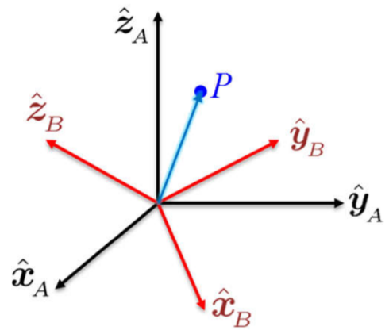
Usando estas bases canónicas, los vectores \(\sv{A}{\p}\) y \(\sv{B}{\p}\) se pueden representar como: \[ \begin{align*} \sv{A}{\p} &= \sv{A}{x} ~\!\hat \x_{\!_A} + \sv{A}{y} ~\! \hat\y_{\!_A} + \sv{A}{z} ~\! \hat \z_{\!_A} \\ \sv{B}{\p} &= \sv{B}{x} ~\! \hat \x_{\!_B} + \sv{B}{y} ~\! \hat\y_{\!_B} + ~\! \sv{B}{z} \hat \z_{\!_B} \end{align*} \] Bajo la restricción que los orígenes del sistema \(\frame A\) y del sistema \(\frame B\) son coincidentes, se desea expresar el punto \(P\) con respecto al sistema \(\frame A\) partiendo de su expresión en el sistema \(\frame B\). Para calcular \(\sv{A}{\p}\) se utiliza el hecho que los componentes de cualquier vector son las proyecciones de dicho vector en las direcciones unitarias del sistema de referencia. Estas proyecciones se obtendrán usando el producto escalar considerando que los vectores eje son unitarios. Así, los componentes de \(\sv{A}{\p}\) son las proyecciones de \(\sv{B}{\p}\) en el sistema \(\frame A\): \[ \begin{align*} \sv{A}{x} & = \sv{B}{\p} \cdot \hat \x_{\!_A} = \sv{B}{x} ~\!(\hat \x_{\!_B} \cdot \hat \x_{\!_A}) + \sv{B}{y} ~\!(\hat \y_{\!_B} \cdot \hat \x_{\!_A}) + \sv{B}{z} ~\!(\hat \z_{\!_B} \cdot \hat \x_{\!_A}) \\ \sv{A}{y} & = \sv{B}{\p} \cdot \hat \y_{\!_A} = \sv{B}{x} ~\!(\hat \x_{\!_B} \cdot \hat \y_{\!_A}) + \sv{B}{y} ~\!(\hat \y_{\!_B} \cdot \hat \y_{\!_A}) + \sv{B}{z} ~\!(\hat \z_{\!_B} \cdot \hat \y_{\!_A}) \\ \sv{A}{z} & = \sv{B}{\p} \cdot \hat \z_{\!_A} = \sv{B}{x} ~\!(\hat \x_{\!_B} \cdot \hat \z_{\!_A}) + \sv{B}{y} ~\!(\hat \y_{\!_B} \cdot \hat \z_{\!_A}) + \sv{B}{z} ~\!(\hat \z_{\!_B} \cdot \hat \z_{\!_A}). \end{align*} \] Estas tres expresiones se pueden representar en forma matricial como \[ \begin{equation*} \bm{\sv{A}{x} \\ \sv{A}{y} \\ \sv{A}{z}} = \bm{ \hat \x_{\!_B} \cdot \hat \x_{\!_A} & \hat \y_{\!_B} \cdot \hat \x_{\!_A} & \hat \z_{\!_B} \cdot \hat \x_{\!_A} \\ \hat \x_{\!_B} \cdot \hat \y_{\!_A} & \hat \y_{\!_B} \cdot \hat \y_{\!_A} & \hat \z_{\!_B} \cdot \hat \y_{\!_A} \\ \hat \x_{\!_B} \cdot \hat \z_{\!_A} & \hat \y_{\!_B} \cdot \hat \z_{\!_A} & \hat \z_{\!_B} \cdot \hat \z_{\!_A} } \bm{\sv{B}{x} \\ \sv{B}{y} \\ \sv{B}{z}} \end{equation*} \] donde la matriz mostrada es la misma matriz \(\ssr{A}{B}\) obtenida en Ecuación 2.1. Usando \(\ssr{A}{B}\) para representar esta matriz, se tiene \[ \sv{A}{\p} = \ssr{A}{B} \sv{B}{\p}. \tag{2.12}\] En Ecuación 2.12 se ve claramente que la matriz \(\ssr{A}{B}\) mapea el vector posición \(\sv{B}{\p}\), que se encuentra en el sistema \(\frame B\), al vector posición \(\sv{A}{\p}\) en el sistema \(\frame A\). La relación inversa se puede obtener paso a paso realizando un procedimiento similar al descrito anteriormente. Sin embargo, también se puede multiplicar ambos términos de Ecuación 2.12 con \(\ssr{A}{B}^{-1}\) a la izquierda, obteniendo \[ \sv{B}{\p} = \ssr{B}{A} \sv{A}{\p} \] donde \(\ssr{B}{A} = (\ssr{A}{B})^T = \ssr{A}{B}^{-1}\). Al igual que en el caso anterior, la matriz de rotación \(\ssr{B}{A}\) mapea un punto representado en el sistema \(\frame A\) a su representación con respecto al sistema \(\frame B\).
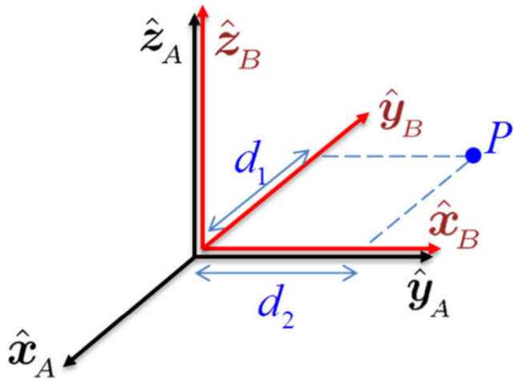
2.4.3 Operador de Rotación
La matriz de rotación \(\Rot\) puede ser interpretada como un operador que rota vectores un ángulo determinado alrededor de un eje arbitrario. El vector en cuestión se expresa en el mismo sistema de referencia antes y después de la rotación. Debido a esto, cuando la matriz de rotación se usa como operador, no se suele utilizar subíndices o superíndices, pues involucra siempre un mismo sistema de referencia.
Considérese un vector \(\p_1\) que es rotado por la matriz \(\Rot\) un ángulo \(\theta\) alrededor de un eje \(\hat{\vect k}\) obteniendo el vector resultante \(\p_2\). Esta rotación se representa convencionalmente como: \[ \p_2 = \Rot(\theta,\vect k) ~\! \p_1. \tag{2.13}\] Cuando los ejes canónicos (\(x,y,z\)) son utilizados como los ejes de rotación, es común simplificar la notación a \(\Rot_x(\theta)\), \(\Rot_y(\theta)\), \(\Rot_z(\theta)\). Se debe notar que la matriz \(\Rot\) que rota un vector es exactamente la misma matriz de rotación que describe al sistema rotado por \(\Rot\) con respecto al sistema de referencia.
Una característica importante del operador de rotación es que no altera la norma Euclideana de un vector, como se mostró en la Sección 2.3.5. En Ecuación 2.13, el vector resultante \(\p_2\), luego de la rotación, tiene la misma norma Euclideana que el vector inicial \(\p_1\). De manera matemática esto se representa como \[ \Vert \p_2 \Vert^2 = \p_2^T \p_2 = (\p_1^T\Rot^T)(\Rot p_1) = \p_1^T\p_1 = \Vert \p_1 \Vert^2, \] lo cual verifica que la rotación es una operación de cuerpo rígido ya que la norma Euclideana, que representa la distancia entre dos puntos, se mantiene constante después de su aplicación.
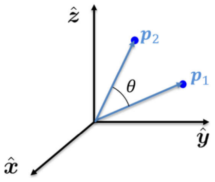
2.5 Composición de Matrices de Rotación
Cuando se realiza una rotación seguida de otra, ambas pueden ser representadas utilizando una matriz de rotación. La rotación resultante será el producto de ambas matrices de rotación. Sin embargo, en general el producto de matrices no es conmutativo, y en este caso el orden de la multiplicación tiene una interpretación física importante. Esta sección presentará esta interpretación del producto de matrices de rotación, justificando la importancia del orden de la multiplicación.
2.5.1 Rotación con Respecto al Sistema Actual
Considérese tres sistemas de referencia \(\frame A\), \(\frame B\) y \(\frame C\), con origen común, pero rotados y ninguno coincidente con el otro. La matriz de rotación \(\ssr{A}{B}\) representa la orientación del sistema \(\frame B\) con respecto al sistema \(\frame A\), y la matriz de rotación \(\ssr{B}{C}\) representa la orientación de \(\frame C\) con respecto al sistema \(\frame B\). Un punto \(P\) puede ser representado con respecto a cualquiera de estos tres sistemas como \(\sv{A}{\p}\), \(\sv{B}{\p}\), o \(\sv{C}{\p}\), siendo la relación entre estas representaciones la siguiente: \[ \begin{align*} \ssv{A}{\p}{} & = \ssr{A}{B}\sv{B}{\p} \\ \ssv{B}{\p}{} & = \ssr{B}{C}\sv{C}{\p} \end{align*} \] Nótese que las únicas matrices de rotación que se conoce son las que relacionan \(\frame B\) con \(\frame A\), y \(\frame C\) con \(\frame B\), pero no se conoce la relación entre \(\frame C\) y \(\frame A\). Sin embargo, reemplazando la expresión de la segunda fila en la expresión de la primera fila (es decir, \(\ssv{B}{\p}{}\) en \(\ssv{A}{\p}{}\)) se llega a \[ \sv{A}{\p} = \ssr{A}{B} \left(\ssr{B}{C}\sv{C}{\p} \right) = \left( \ssr{A}{B} \ssr{B}{C} \right) \sv{C}{\p}. \] Esta expresión muestra de manera explícita la relación existente entre \(\sv{A}{\p}\) y \(\sv{C}{\p}\), llevando a la conclusión que el producto de matrices mostrado en el paréntesis relaciona al sistema \(\frame A\) con el sistema \(\frame C\). Esta relación se puede escribir como \[ \boxed{ \ssr{A}{C} = \ssr{A}{B} \ssr{B}{C}} \tag{2.14}\] y se conoce como la composición de rotaciones sucesivas. Así, para obtener la orientación entre dos sistemas de referencia cuya matriz de rotación se desconoce, es necesario encontrar la orientación de estos sistemas con respecto a algún sistema común, en este caso el sistema \(\frame B\). De manera nemotécnica, Ecuación 2.14 muestra que al realizar el producto de dos matrices de rotación \(\ssr{A}{B} \ssr{B}{C}\), el sistema que aparece en el centro (en este caso \(\frame B\)) se cancela, y solo permanecen los sistemas externos (en este caso, \(\frame A\) y \(\frame C\)).
El producto de matrices de rotación, mostrado en Ecuación 2.14, se puede interpretar de las siguientes dos maneras.
a. Transformación de un punto. La matriz \(\ssr{A}{C}=\ssr{A}{B} \ssr{B}{C}\) transforma las coordenadas del punto \(P\) de su representación en el sistema \(\frame C\) a su representación en el sistema \(\frame A\). En este caso, se transforma primero las coordenadas del sistema \(\frame C\) al sistema \(\frame B\) usando \(\ssr{B}{C}\), y luego del sistema \(\frame B\) al sistema \(\frame A\) usando \(\ssr{A}{B}\).
b. Rotaciones con respecto a los sistemas actuales. La matriz \(\ssr{A}{C}\) rota el sistema \(\frame A\) hasta alinearlo con el sistema \(\frame C\). Suponiendo que inicialmente se tiene un sistema alineado con \(\frame A\), la rotación \(\ssr{A}{C}=\ssr{A}{B} \ssr{B}{C}\) describe los dos siguientes pasos:
- Partiendo de \(\frame A\), considerado como el sistema actual, primero se realiza una rotación utilizando \(\ssr{A}{B}\) hasta quedar alineado con el sistema \(\frame B\). Nótese que \(\ssr{A}{B}\) es una rotación representada con respecto al sistema actual \(\frame A\).
- El sistema resultante, que ahora es considerado como el sistema actual, se encuentra alineado con \(\frame B\) y es rotado de acuerdo con \(\ssr{B}{C}\) hasta quedar alineado con el sistema \(\frame C\). Se debe notar que \(\ssr{B}{C}\) es una rotación representada con respecto al sistema \(\frame B\), el cual es considerado en este caso como el sistema actual.
Como se describe en estos dos pasos, una rotación resultante se puede expresar como composiciones de rotaciones parciales, definiendo cada rotación con respecto a la rotación precedente. El sistema con respecto al cual se realiza cada rotación se denomina el sistema actual, o el sistema móvil. Así, la composición de rotaciones sucesivas con respecto al sistema actual se obtiene post-multiplicando (multiplicando a la derecha) las matrices de rotación.
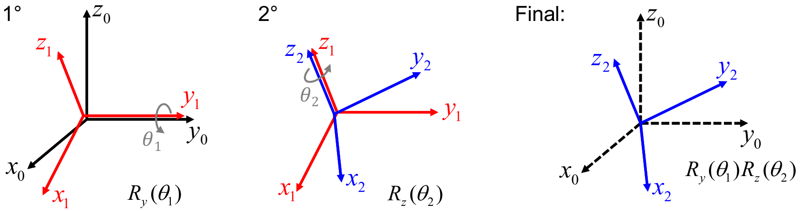
Es importante notar que el orden en que se realizan las rotaciones no es conmutativo; por tanto, se debe considerar con cuidado el orden en que se realizan los productos de las matrices de rotación. En el Ejemplo 2.12, si se tuviese orden inverso de multiplicación; es decir, \(\Rot_z(\theta_2)\Rot_y(\theta_1)\), el resultado sería diferente (y se puede verificar término a término), así como la interpretación.
2.5.2 Rotación con Respecto al Sistema Fijo
Para poder describir adecuadamente las rotaciones sucesivas con respecto a un eje fijo, es necesario primero repasar el concepto de transformaciones de similaridad, ya que constituye su base matemática.
- Transformaciones de Similaridad
-
Considerando que existe una matriz invertible \(P\), la transformación de una matriz \(M\) a una matriz \(P^{-1}MP\) se denomina una transformación de similaridad. Se dice que la matriz \(M'\) resultante de la transformación de similaridad \[ M' = P^{-1}MP \] es similar a la matriz \(M\). Matemáticamente dos matrices similares poseen el mismo espectro (los mismos autovalores) y el mismo polinomio característico, implicando el mismo determinante. La interpretación de esta transformación es que tanto la matriz inicial \(M\), como la matriz \(M'\) obtenida luego de la transformación de similaridad, representan la misma transformación lineal, pero con respecto a sistemas de referencia diferentes, siendo \(P\) la matriz que determina el cambio de sistemas, también denominado cambio de bases.
Para la representación de cuerpos rígidos se utiliza el hecho que una transformación de similaridad expresa una misma transformación lineal con respecto a un sistema de referencia diferente. Considérese dos puntos representados en el sistema de referencia \(\frame A\) como \(\ssv{A}{\p}{_1}\) y \(\ssv{A}{\p}{_2}\), y sea \(\ssv{A}{M}{}\) la representación matricial de una transformación lineal genérica en el sistema \(\frame A\) que convierte el punto \(\ssv{A}{\p}{_1}\) en el punto \(\ssv{A}{\p}{_2}\) como: \[ \ssv{A}{\p}{_2}=\ssv{A}{M}{} ~\ssv{A}{\p}{_1}. \] Considérese además que existe un sistema de referencia \(\frame B\), y que la matriz \(\ssr{A}{B}\) transforma el sistema \(\frame B\) en el sistema \(\frame A\). Como se vio anteriormente, los puntos en el sistema \(\frame B\) pueden ser fácilmente representados con respecto al sistema \(\frame A\) como \(\ssv{A}{\p}{_1}=\ssr{A}{B} \ssv{B}{\p}{_1}\), y \(\ssv{A}{\p}{_2}= \ssr{A}{B} \ssv{B}{\p}{_2}\). Utilizando estas igualdades, la expresión anterior puede ser escrita como: \[ (\ssr{A}{B} \ssv{B}{\p}{_2})=\ssv{A}{M}{} ~(\ssr{A}{B} \ssv{B}{\p}{_1}), \] de donde, despejando \(\ssv{B}{\p}{_2}\) ya que las matrices de rotación son invertibles, se obtiene \[ \ssv{B}{\p}{_2}= \ssr{A}{B}^{-1} ~\! \ssv{A}{M}{} ~\!\ssr{A}{B} \ssv{B}{\p}{_1}. \] Esta expresión muestra claramente que el término \(\ssr{A}{B}^{-1} ~\! \ssv{A}{M}{} ~\!\ssr{A}{B}\) transforma el punto \(\p_1\) en el punto \(\p_2\), cuando ambos puntos se encuentran representados con respecto al sistema \(\frame B\). Debido a que la transformación \(\ssv{A}{M}{}\) por definición transforma el punto \(\p_1\) al punto \(\p_2\) pero con respecto al sistema \(\frame A\), se puede escribir la misma transformación con respecto al sistema \(\frame B\) como \[ \ssv{B}{M}{}= \ssr{A}{B}^{-1} ~\!\ssv{A}{M}{} ~\!\ssr{A}{B} \] donde queda claro que \(\ssv{B}{M}{}\) se obtiene como una transformación de similaridad de \(\ssv{A}{M}{}\), y ambas matrices representan la misma transformación pero con respecto a diferentes sistemas de referencia. Más aún, dado que \(\ssr{A}{B}\) es una matriz de rotación, esta transformación de similaridad puede ser simplificada a \[ \ssv{B}{M}{}= \ssr{B}{A} ~ \ssv{A}{M}{} ~\ssr{A}{B}. \tag{2.15}\] Finalmente, si \(\ssv{A}{M}{}\) es una matriz de rotación, que se comporta como un operador de rotación, el uso de la transformación de similaridad Ecuación 2.15 permite expresar la misma rotación con respecto a un sistema de referencia diferente.
- Rotación con Respecto al Sistema Fijo
-
Considérese dos sistemas de referencia \(\frame A\) y \(\frame B\), con origen común, donde la orientación del sistema \(\frame B\) con respecto al sistema \(\frame A\) está representada por la matriz de rotación \(\ssr{A}{B}\). De manera equivalente, se puede decir que partiendo del sistema \(\frame A\) se aplica una rotación \(\ssrnocal{\mathcal A}{1}=\ssr{A}{B}\) para obtener el sistema \(\frame B\). La notación \(\ssrnocal{\mathcal A}{1}\) se utilizará solamente para enfatizar que es la primera rotación que se está aplicando, y que esta rotación se realiza con respecto a los ejes del sistema \(\frame A\). Luego al sistema \(\frame B\) se le aplica otra rotación \(\ssrnocal{\mathcal A}{2}\) hasta llegar al sistema \(\frame C\). Sin embargo, a pesar de que esta segunda rotación se aplica al sistema \(\frame B\), es especificada con respecto a los ejes del sistema de referencia \(\frame A\), que se considera el sistema fijo ya que no ha presentado ninguna modificación, y por ello la notación \(\ssrnocal{\mathcal A}{2}\).
La orientación final del sistema \(\frame C\) con respecto al sistema inicial \(\frame A\) se puede obtener a partir de Ecuación 2.14, pero esta expresión requiere que las rotaciones se expresen con respecto al sistema actual. Si bien la primera rotación \(\ssrnocal{\mathcal A}{1}\) se encuentra con respecto al sistema actual, la segunda rotación \(\ssrnocal{\mathcal A}{2}\) no se encuentra con respecto al sistema actual, que en ese caso era el sistema \(\frame B\). Para expresar esta segunda rotación con respecto al sistema \(\frame B\) es necesario utilizar la transformación de similaridad dada en Ecuación 2.15, obteniéndose \[ \begin{align*} \ssrnocal{\mathcal B}{2} &= \ssr{B}{A} \ssrnocal{\mathcal A}{2} \ssr{A}{B} \\ & = \ssrnocal{\mathcal A}{1}^T \ssrnocal{\mathcal A}{2} \ssrnocal{\mathcal A}{1} \end{align*} \] donde se usó la equivalencia \(\ssrnocal{\mathcal A}{1}=\ssr{A}{B}\) y \(\ssrnocal{\mathcal A}{1}^T=\ssr{B}{A}\). Finalmente, aplicando Ecuación 2.14 para la composición de rotaciones con respecto al sistema actual se tendrá que la rotación resultante \(\Rot\) que describe al sistema \(\frame C\) con respecto al sistema \(\frame A\) está dada por \[ \Rot = \ssrnocal{\mathcal A}{1} \ssrnocal{\mathcal B}{2} = \ssrnocal{\mathcal A}{1} (\ssrnocal{\mathcal A}{1}^T \ssrnocal{\mathcal A}{2} \ssrnocal{\mathcal A}{1}) \] llegando luego de la simplificación a \[ \Rot = \ssrnocal{\mathcal A}{2} \ssrnocal{\mathcal A}{1}. \tag{2.16}\]
De este modo se puede ver que cuando una rotación \(\ssrnocal{\mathcal A}{2}\) se realiza con respecto a un sistema fijo, en este caso \(\frame A\), la matriz de rotación se pre-multiplica (multiplicación por la izquierda) con la anterior rotación.
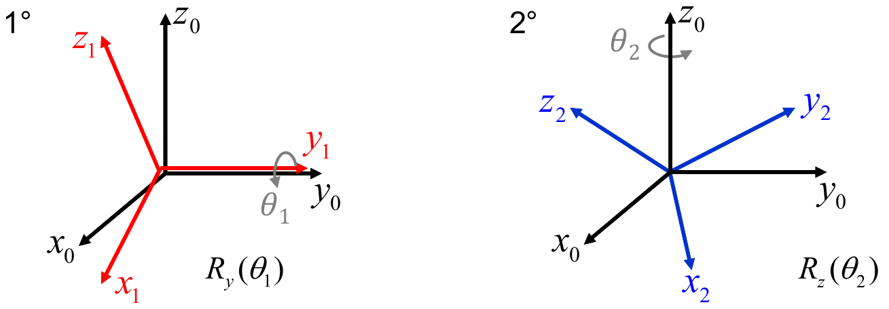
2.5.3 Resumen: Composición de Rotaciones
Con el fin de recalcar la importancia del orden de la multiplicación al momento de realizar una composición de rotaciones, en esta sección se resumirá los posibles casos. Considérese un sistema de referencia \(\frame A\) al cual se aplica una rotación \(\ssr{A}{B}\) para llegar al sistema \(\frame B\). Luego al sistema de referencia \(\frame B\) se le aplica una segunda rotación \(\Rot\) para llegar al sistema \(\frame C\). Dependiendo de si la rotación \(\Rot\) se realiza con respecto a los ejes del sistema actual o con respecto a los ejes del sistema fijo, se tiene los dos siguientes casos.
Si la rotación \(\Rot\) se aplica con respecto al sistema actual \(\frame B\), esta rotación se post-multiplica (multiplica por la derecha) con \(\ssr{A}{B}\) obteniéndose \[ \ssr{A}{C} = \ssr{A}{B}~ \Rot. \]
Si la rotación \(\Rot\) se aplica con respecto al sistema fijo \(\frame A\), esta rotación se pre-multiplica (multiplica por la izquierda) con \(\ssr{A}{B}\), obteniéndose \[ \ssr{A}{C} = \Rot ~ \ssr{A}{B}. \]
En cada caso, la matriz resultante \(\ssr{A}{C}\) representa al sistema \(\frame C\) con respecto al sistema \(\frame A\). Sin embargo, es importante notar que en ambos casos las matrices resultantes son diferentes.
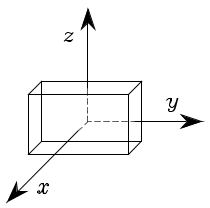
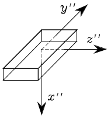
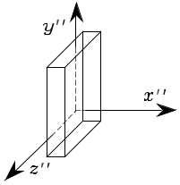
2.5.4 Complejidad Computacional
Como se ha visto anteriormente, al aplicar varias rotaciones a un punto dado \(\p\), estas rotaciones se componen mediante el producto de matrices de rotación. A pesar de que estos productos pueden ser asociados de cualquier manera, debido a la propiedad de asociatividad ligada al producto, desde el punto de vista computacional resulta importante considerar la forma en la que se realiza esta asociación. No existe una regla general para la asociación eficiente, pero en general resulta recomendable realizar productos de matriz con vector antes de realizar producto de matriz con matriz, como se ejemplifica a continuación.
El ejemplo anterior muestra que es computacionalmente más eficiente realizar productos sucesivos de matrices con vectores antes que realizar productos de matrices con matrices. Sin embargo, se debe tener en cuenta que si la matriz \(\ssr{A}{D}\) apareciese varias veces y fuese constante, podría resultar más eficiente primero calcularla y luego, multiplicarla con los puntos deseados.
2.6 Representación de la Posición y Orientación
2.6.1 Transformaciones homogéneas
Propiedades
Transformaciones Puras